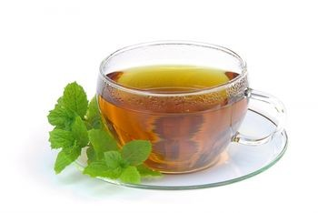

5 Herbal Teas That You Should Try

Herbal teas offer a variety of tastes and healing properties. When steeping herbal tea, a cover should be placed over the pot or cup until it is ready to drink. Here are some of the most popular herbal teas. v
Top 5 Herbal Teas
- Detox Tea
A blend of detox herbs including milk thistle, sarsparilla root, dandelion root, echinacea, and red clover that stimulate the liver, gallbladder, and immune system. It should not be used by pregnant or nursing women, or by people with gallstones, breast or uterine cancer, or autoimmune disease.
- Chamomile Tea
Chamomile is a calming herb that can be helpful for people under stress. It also relieves bloating and indigestion. Chamomile may cause an allergic reaction, and it should not be used by people taking warfarin or other anticoagulant drugs.
- Ginger Tea
Ginger soothes the digestive system. It is also used for nausea and has been used for arthritis due to its anti-inflammatory effects. People taking drugs with a narrow theraputic index, such as warfarin, should consult a health practitioner since ginger can increase the risk of bleeding.
- Peppermint Tea

Peppermint is a digestive aid that helps to relieve bloating and indigestion. In the form of coated capsules, peppermint is also used to treat irritable bowel syndrome (IBS) and gallstones. It should not be used by people with heartburn, as it may aggravate symptoms.
- Hawthorn Berry Tea
Hawthorn is a traditional heart tonic. It is an antioxidant that strengthens blood vessel walls and heart function and has a beneficial effect on cholesterol. This tea should not be used to treat a heart condition, and it should not be used by people taking heart or kidney medication without consulting a health practitioner.
Source: Top 5 Herbal Teas